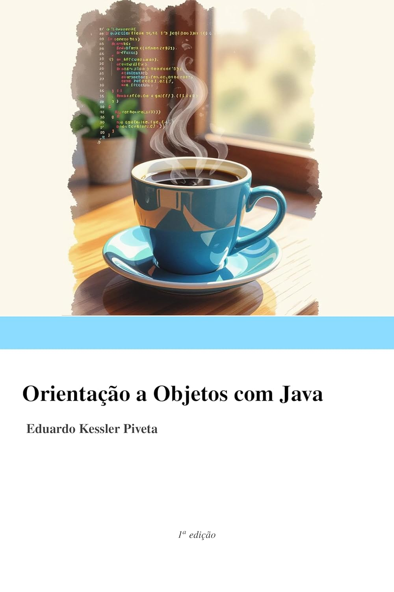

por Eduardo Kessler Piveta
Um livro sobre programação orientada a objetos em Java, explorando os principais conceitos da linguagem de forma detalhada e progressiva.
Cobre Java 25 - A LTS mais atual da linguagem!
Eduardo Kessler Piveta é professor titular do Departamento de Linguagens e Sistemas de Computação da Universidade Federal de Santa Maria (UFSM) e Doutor em Ciência da Computação pela Universidade Federal do Rio Grande do Sul (UFRGS).
Seus temas de interesse incluem projeto e evolução de software, paradigmas de programação e projeto e implementação de linguagens de programação. Possui 25 anos de experiência no ensino superior em Computação, tendo atuado em diferentes universidades brasileiras, incluindo CEULP/ULBRA, Unisinos, UFRGS, UNIPAMPA e UFSM.
Site institucional